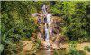

{kind=link}
{kind=link}
{kind=link}

7 Tinajas
conoce 7 Tinajas
Todos conocemos las principales y céntricas parques que tiene la ciudad del eterno verano Quillabamba. Pero existen varios parques que pasan desapercibido por los visitantes ya que se encuentran dispersos en los extremos de la ciudad.
AQUÍ te presentamos 3 PARQUES POCO CONOCIDOS que puedes visitar en Quillabamba.
Parque La Convención
Se encuentra ubicada en la esquina del Jr. General Gamarra con el Jr. Pangoa, con referencia detrás del colegio La Convención, este espectacular parque cuenta con 5 accesos, además de contar con una estructura ornamental en el centro, que sirve para cubrirse del calor o la lluvia dándole creatividad al parque. El lugar cuenta con plantas que adornan el lugar y una vista panorámica hacia la Universidad Intercultural de Quillabamba y el rio Vilcanota.
Parque del Campesino
Fue inaugurada en noviembre de 1995 por el Alcalde de ese entonces Prof. Isauro Jordán Castillo, se encuentra ubicado al lado DERECHO del malecón vía Pavayoc.
Esta cuenta con 3 accesos a la plaza, 10 banquetas para descansar y en la parte central se encuentra la estatua de una familia campesina que representa nuestra IDENTIDAD CULTURAL Convenciana.
Parque Geriatrico del Adulto Mayor
Está ubicada en el Jr. 25 de Julio con referencia frente a la Villa Militar, es un parque dedicado al descanso y libre ejercitación, el lugar fue construido con el fin de que el adulto mayor realice actividades para fortalecer la salubridad del cuerpo. Se recomienda visitarla a primeras horas de la mañana o al atardecer, darle la preferencia de uso de las maquinas a los adultos mayores.
En este parque se puede observar un gran mural representativo en homenaje a los adultos mayores.